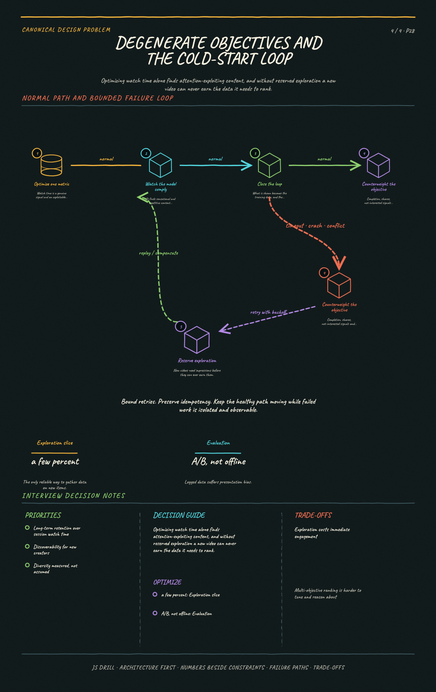

https://frosty110.github.io/js-drill/assets/system-design/infographics/design-problems/p28/objective-and-cold-start.pngServe an endless, personalized stream of short videos where the recommendation engine — not a social graph — decides what plays next. The signature challenge is that the feed must be ranked per user in tens of milliseconds while the video for the *next* swipe is already downloading.
All questions, model answers and diagrams for Design a Short-Form Video Feed →